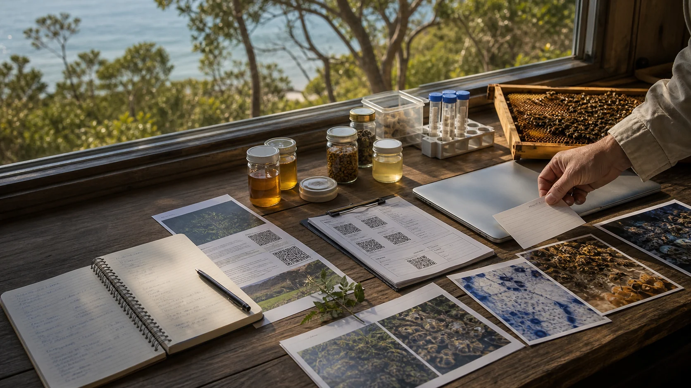

Queensland bee pests and diseases
Varroa reporting, restricted matter and bee pest guidance.

This site is a public framing pass based on the local content reference, current official source checks and generated hero imagery. It is designed to be useful and correctable, not final.
Local source file
The content map came from content reference.txt in this repository. The site rewrites that material into visitor-facing pages with a softer, question-led public voice.
Public boundary: this is not legal advice, biosecurity advice, treatment advice, Traditional Custodian permission, university endorsement or a claim that a lab already exists. It is a carefully hedged proposal map for a possible co-op stewardship model.
Official checks
These were used to keep the site careful around varroa, registration, biosecurity, permits, biodiscovery and higher education status. Check them again before acting because rules and programs can change.
Varroa reporting, restricted matter and bee pest guidance.
Queensland varroa hive check and reporting pathway.
Queensland registration guidance for keeping European honey bee hives.
Queensland biosecurity obligation guidance.
Permit pathway for research use of agricultural and veterinary chemicals.
Collection authority and biodiscovery requirements for native biological resources.
The site no longer names an existing facility as the base. The next source pass should gather mapping, access, services and planning inputs for a new-capacity digital twin.
Bee pest, disease, biosecurity and IPM research-extension context.
Higher education provider registration pathway.
Research expectations for Australian university status.
Image notes
The images are custom generated editorial-style scenes for this site. They are visual metaphors for the proposal, not evidence that the pictured people, labs or locations exist exactly as shown.
Beekeeper above coastal water and eucalypt scrub.
Local beekeepers learning together at a small apiary.
Modest microscope bench with island field-lab mood.
Sample handling and equipment hygiene without enforcement theatre.
Native plant and trap-testing bench before claims.
Community table where no one is staged as the boss.
Outdoor field school and practical learning.
Evidence table, field notes and sample materials.